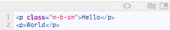
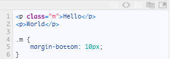
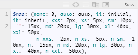
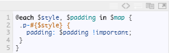

利用Sass自动生成padding和margin边距样式
需求分析
有需求才有动力！
写CSS的时候，你经常会遇到要设置一个小边距，比如设置：
所有内边距10px，外左边距20px，内右边距0，上下内边距50px，外左右边距自动….
而你是不是又不想自己单独为它们定义一个class，然后把padding, margin之类的写进去？
举例如下：
现在我有两个p标签，我想让这两个p标签中间相隔10px，那是不是需要？
实例分析
通过上面的层级关系和简称划分，我们可以对他们进行自由组合，形成一个个class样式。比如： .p-t-xs 即为上内边距是5px，.p-h-md 即为左右内边距是20px，.p-b-n-lg 即为下内边距是-30px， .p-r-xxl 即为右内边距是50px，.p-t 即为上内边距为正常边距15px（正常边距省略即可），.p-n 即为内边距是-15px。 .p-v-n 即为上下内边距是-15px，.m-h-auto 即为水平左右外边距是自动auto, .m-t-ii 即为上外边距是初始化initial。 .m-r-none 即为右外边距是0。 怎样？通过这样的定义，能不能找出规律？即 第一个字母p或者m，代表padding或者margin。 第二个字母代表方向，t上方、b下方、l左方、r右方、v上方和下方、h左方和右方。 第三个（组）字母代表距离，xs是+2px，n-lg是-30px，空是自动边距15px，n是反向正常值-15px，ii是初始化，none是无，auto是自动边距。 怎样？有了这些定义，我们是不是就能非常方便地设置边距样式了？刚才的边距怎样解决？很简单，只需要
如果一个网页里有很多样式，那只需要把整个样式文件引入，自由地添加class就好了。
编写SASS
这么多组合呢？写CSS不累死了？检查也不好检查。 怎么办？上Sass！ 首先我们先定义一层映射，边距映射：
这里定义了所有的边距和它的简称。 然后我们尝试写一下padding的函数，遍历一下：
这样我们就生成了所有padding边距的设置。 好接下来设置下水平和垂直边距吧，这个就需要两句话了，比如设置水平你得写padding-left 和 padding-right。 有的小伙伴说了，可以直接写一个啊，比如 padding: 0 20px 就可以，不过这样你同时设置了上下边距。即便上下边距我们设置成inherit或者什么其他的，那也多多少少在某种情况下产生影响。 所以这里我们直接分开，而且就算不分开，你之前的映射就要修改，还是麻烦的。 所以这里定义如下：